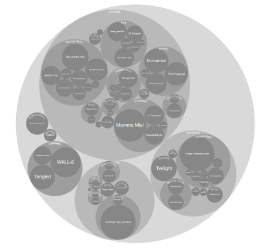

Side note: Circle Packing is the second coolest representation to be done with data compacted in circular forms, right after cluster circular data visualization
Circle Packing is a variation of a treemap, using circles instead of rectangles or straight lines. Each branch of the tree is represented as a circle and its sub-branches are represented as circles inside of it
The Area of each circle can also be used to represent an additional arbitrary value, such as quantity or file size. Colour may also be used to assign categories or to represent another variable via different shades.
Histoty
Circle Packing is a branch from Tree mapping, another sort of enclosure diagrams. And similar to Tree mapping, which was introduced by Ben Shneiderman in 1991, Circle packing is also a space-filling, using containment rather than adjacency to represent the hierarchy. But instead of dividing the area into rectangles, Want et Al., introduced Circle packing, which works by packing circles instead of subdividing rectangles in the goal of producing a different sort of enclosure diagram that has an almost organic appearance. While it does not use space as efficiently as a treemap, the "wasted space" of circle-packing layouts effectively reveals the hierarchy. At the same time, node sizes can be rapidly compared using area judgments.
Personal Opinion/ Pros and Cons
Pros:
I guess despite the inefficiency due to wasted space between circles (if we were to care about that in the first place), the Circle Packing is more aestherically appealing and reveals hierarchal structure better, and more clearly than many other types of enclosure diagrams. When dealing with large amounts of data, that requires extremely detailed categorization, circle packing could be the way to go
Cons:
While it could be zoomable and hyperlinked, Circle packing is not the most interactive representation method, and has limitations in terms of complexity of relations within the subjects and families
Types of Data used in Circle Packing
This type of data visualization is most suitable for large hierarchical data structures. Like categorization of files and folders, or family trees, or any other type of data that requires clarity and zommability. It is a friendly interface (specially if somehow merged with a "Cluster" feature).
One amzazingly complicated and loaded set of data that is surprisingly simple to navigate is This amazing pack below which was created by Mike Bostock

More Uses
Circle Packing can even be used for presentations. One famous open platform that uses Circle Packing is Prezzi
, where any number of slides or media could be embedded within a large zoomable cirlce and categorized in smaller circles.
Examples
I found this basic version of laying out data based on category and relevance, at Mbstock it was done by Mike Bostock and posted to his blog
I wasn't able to embed the whole interactive version on this page, but you can check out the interactive version by Clicking Here